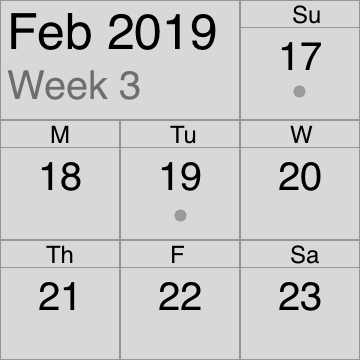
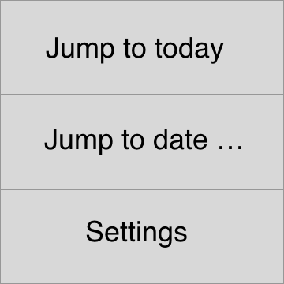
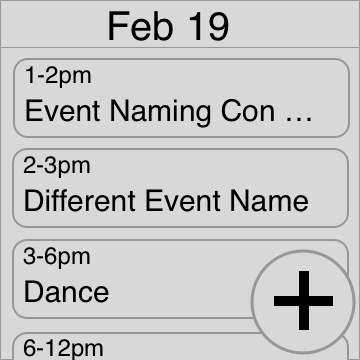
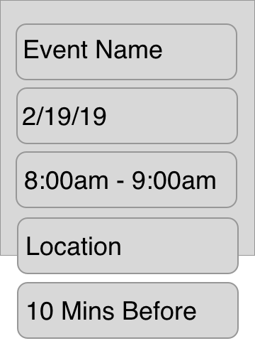
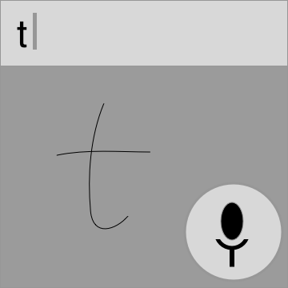
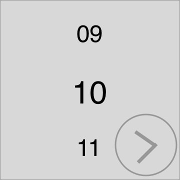

Planned Changes
All pages will use pinch to exit, instead of swiping down. The animations will reflect this. On any page, they should be able to long press to bring up button versions of the available actions.
Week View
The 'Feb 2019' box should open the 'jump to date' feature. when tapped
Menu
Today View
The time on this page should be formatted as 1:00 instead of 1pm.
Event Details View
- Add a save button at the bottom.
- Add a bell icon on the notification timer.
- Have seperate inputs for start & end time, or start & duration.
- Pinch to exit, should show confirmation dialog for saving or not.
- Add a way to categorize the events by color.
Typing

Add some hidden gestures:
- Shake to clear (with confirm dialog)
- Check mark to save
- Long press
- Double tap
- Draw a squiggle
- Don't do it, only allow full clear
Month Picker

Day Picker
- The date picker pages should show the choices you've made so far about the date.
- Swiping left and right on them should jump between the other pickers.
- The arrow button should be the same size as the FAB on the first screen.